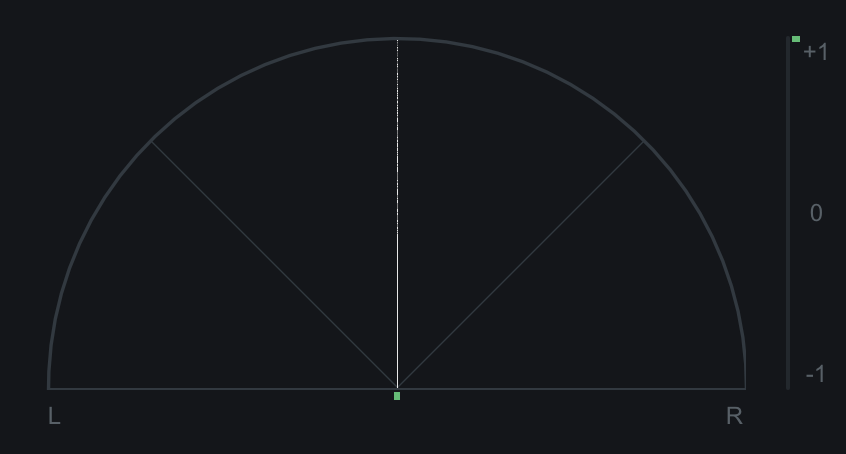
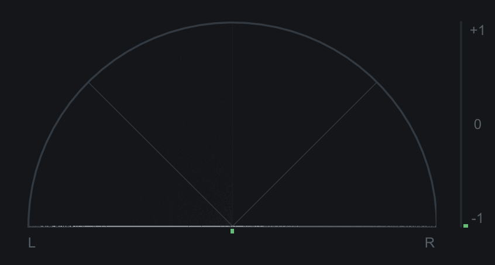
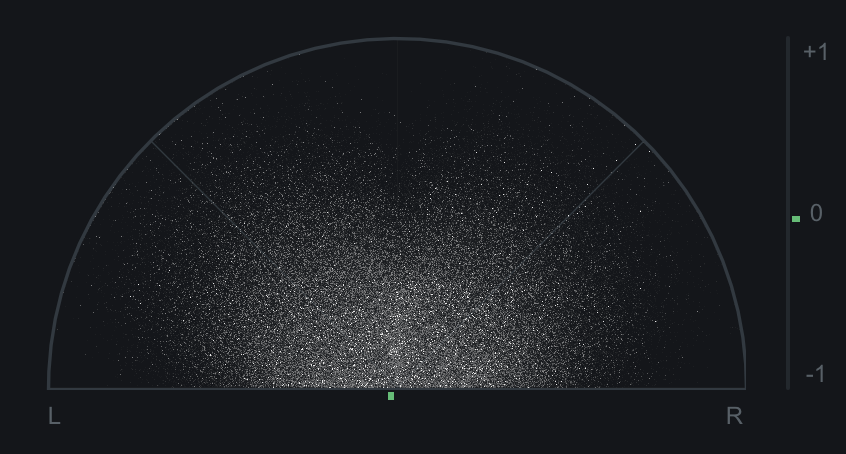
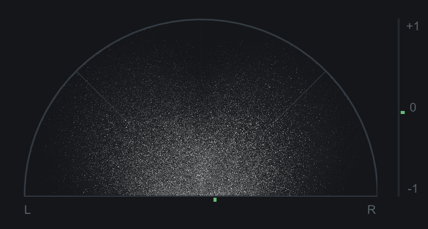

Understanding Phase Correlation
What happens when the exact same signal comes from two separate places?
Note: It is suggested to turn down the volume of your speakers as these sounds can be on the louder side.
Example 1: Correlated Pink Noise, Same Polarity
The first example is the same pink noise generator has been sent to the left and right channels. This means that the exact same sound is being heard come out of both speakers.

The example should sound as if the sound is focused in the phantom center of the speakers.
Example 2: Correlated Pink Noise, Inverse Polarity
In this example, the polarity of the right channel has been flipped. This results in any sounds that are fully shared by both channels being cancelled out.

Example 3: Decorrelated Pink Noise, Same Polarity
This example contains two pink noise generators that are panned hard left and hard right. The pink noise heard in the first example was the same generator sending to both speakers. This means that the sound coming out of both speakers was the same sample by sample.
While using two pink noise generators instead of only one may not sound like it would make a huge difference, listen to the following example. What happened to the phantom center?

Example 4: Decorrelated Pink Noise, Inverse Polarity
In this example, the polarity on the right speaker has been inverted. Do you notice any difference from example 3?

As a result of the sounds being sent to the speakers being decorrelated, the phantom center effect disappears and, therefore, changing the polarity on the right speaker does not have any audible effect.
Example 5: Music, Polarity Inverted and Flipped Back
In this example, the kick drum, snare drum, and lead synth are panned center. A hi-hat and pad sound are panned hard left. A different hi-hat and pad sound are panned hard right.
Notice what happens to the sounds that are panned to the center when the polarity is inverted on the right channel 8 seconds into the clip and flipped back at 16 seconds.
Example 6: Summing to Mono
In the screen recording below, you can see the polarity shift from having a positive correlation when the two channels have the same polarity to leaning towards negative correlation when the polarity of the right channel is inverted.
Now, the audio you are hearing here is in mono. Listen to what happens to the kick and snare when the polarity is inverted.
That's right. The audio disappears entirely. Since the entire kick and snare sound is shared by both speakers, when the polarity is inverted in the right speaker, the sounds that are completely shared between both speakers (panned center with no stereoization) will be cancelled out.